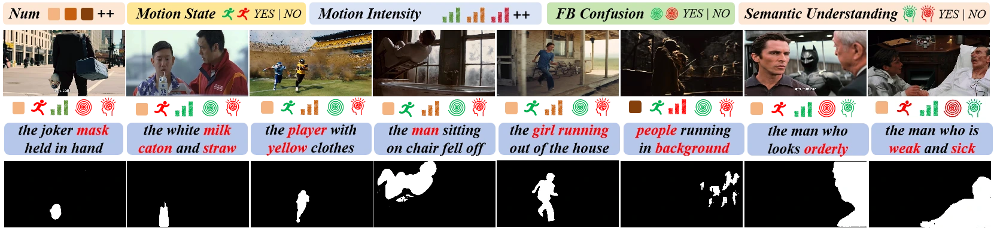
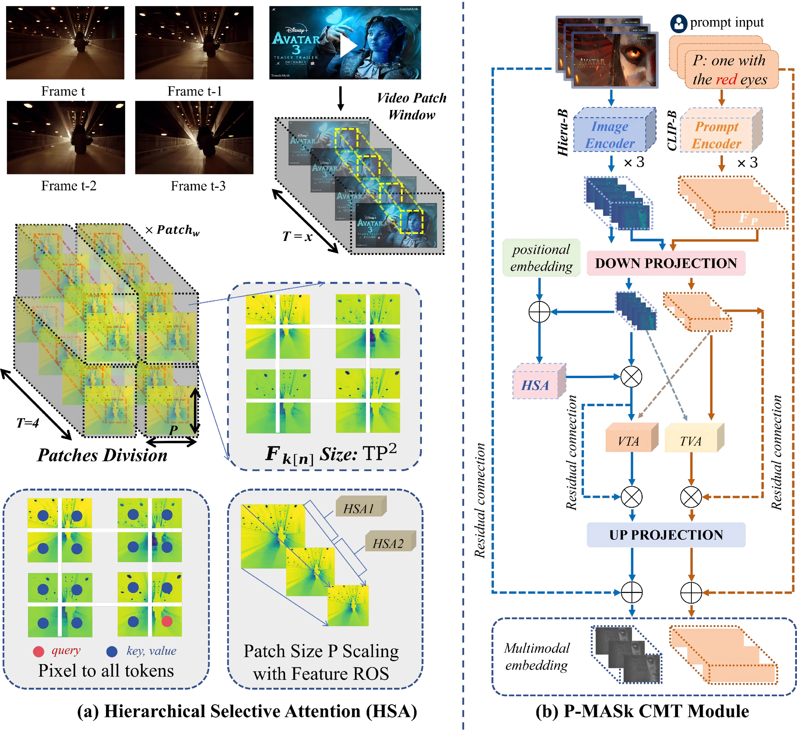

Find the right object with P-MASk
Prompt-guided segmentation across motion, appearance, and semantic ambiguity.

P-MASk architecture Temporal modeling and language–vision alignment

INSIDE P-MASk
Connect what the prompt means
with how the object moves.
Built on a frozen SAM2 backbone and text encoder, P-MASk adapts visual and language features to generate text-conditioned video masks.
(a) Hierarchical Selective Attention
Visual tokens are grouped across frames within a temporal window. HSA models cross-frame relationships, giving the visual representation temporal context beyond an individual frame.
(b) Cross-modal temporal adaptation
The CMT module combines visual and text features through cross-attention in both directions. Down- and up-projection layers, positional embeddings, and residual connections form the adaptation path shown in the diagram.
From aligned features to masks
The adapted features return to the SAM2 segmentation pipeline. A Conditional Memory Encoder (CME), described separately in the paper, evaluates target–text agreement to guide memory updates and correct tracking bias.